Hoy, vista por vista
Capturas del 7-nov-2026 con la build Debug de origin/2.3 en el simulador. El reloj de la app se adelantó con el reloj falso del molde de la ficha para fijar el día del mes. «Sin conexión» no se pudo ver en pantalla (ver PN-9).
ficha con el reloj del simulador en el 20 de noviembre de 2026: cuatro cuentas (Ahorros USD $33,615 · Cuenta Principal S/ −53,738.91 · Efectivo S/ 380 · Tarjeta de crédito S/ 1,284.30 por pagar), balance de noviembre S/ 6,882.40 (entró S/ 12,910.40, salió S/ 6,028), saldo total S/ 64,690.04 y una nota de salud de 99. El saldo negativo de la Cuenta Principal sale de cómo la semilla reparte dos años de gastos; aquí sirve para ver qué hace el Panel con una cuenta en rojo. Ninguna cifra es de una persona real.PanelView y HeroMonthView · mes típico (20 de noviembre)
Este mes, «Tus finanzas» desplegada, todas las secciones menos Herramientas.


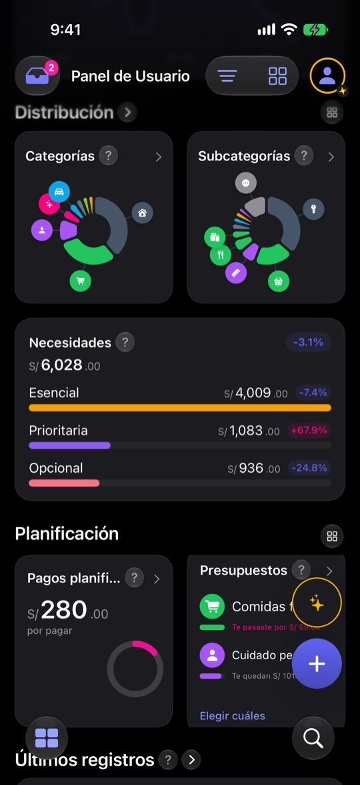

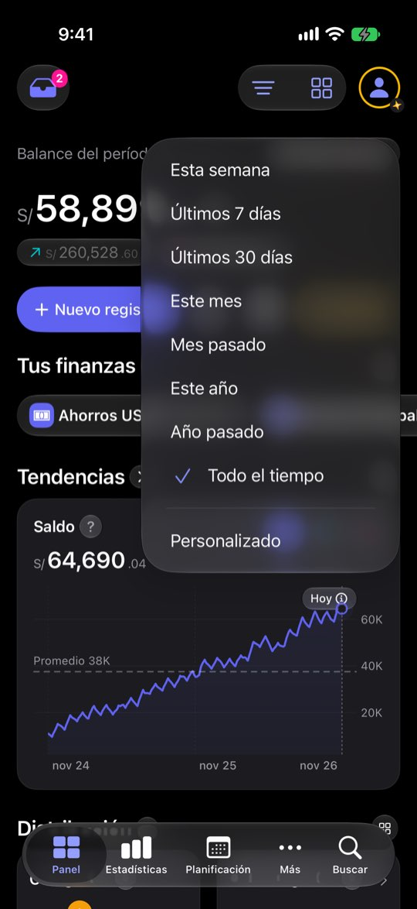
PanelView · mes recién empezado (1 de diciembre)
El mismo corpus con el reloj en el día 1.


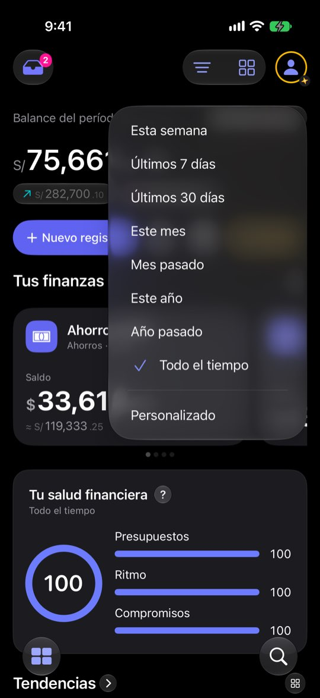
AccountsCarouselView y AccountCardView
Cuatro cuentas, una a una; la última tarjeta crea una cuenta.

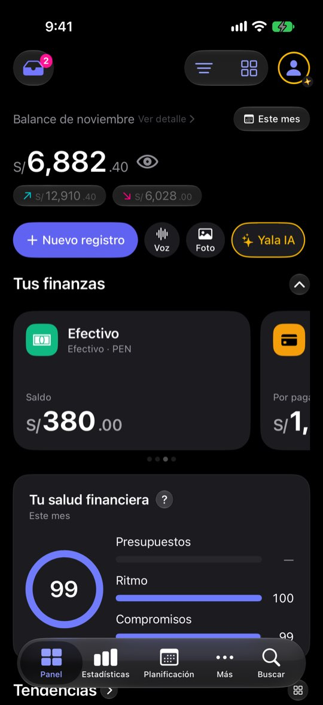
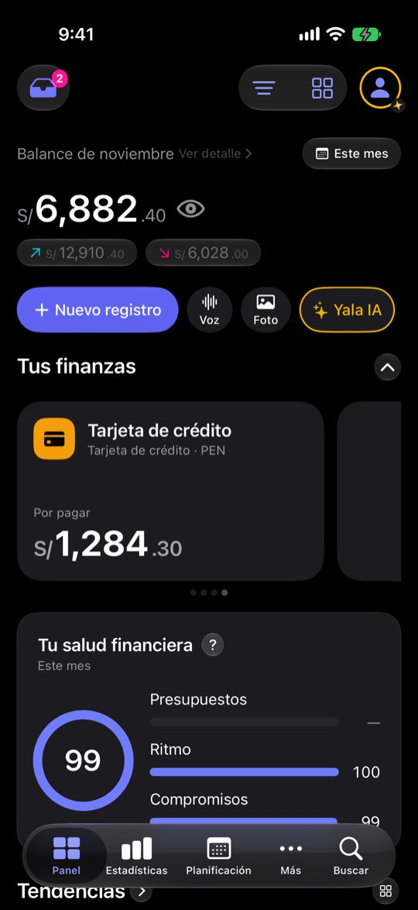
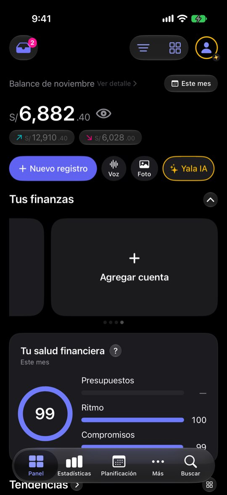

Varias divisas · tarjeta con soles y dólares
Semilla de pruebas tarjeta-dos-lineas, mismo reloj.


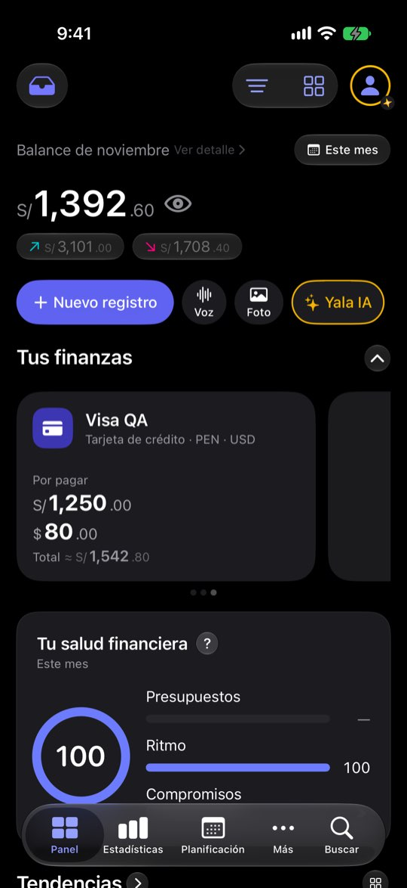

FinancialScoreView, ScoreRingView y su hoja
Tocar el anillo o el «?» abre la misma hoja.
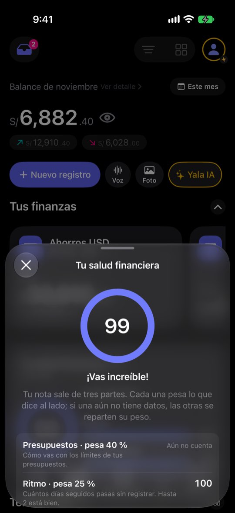

TrendChartView
Gráfica de saldo, con el dedo encima y con «Todo el tiempo».

Montos ocultos (ojo) y hojas de información
El ojo tapa montos; los porcentajes se ven por decisión.
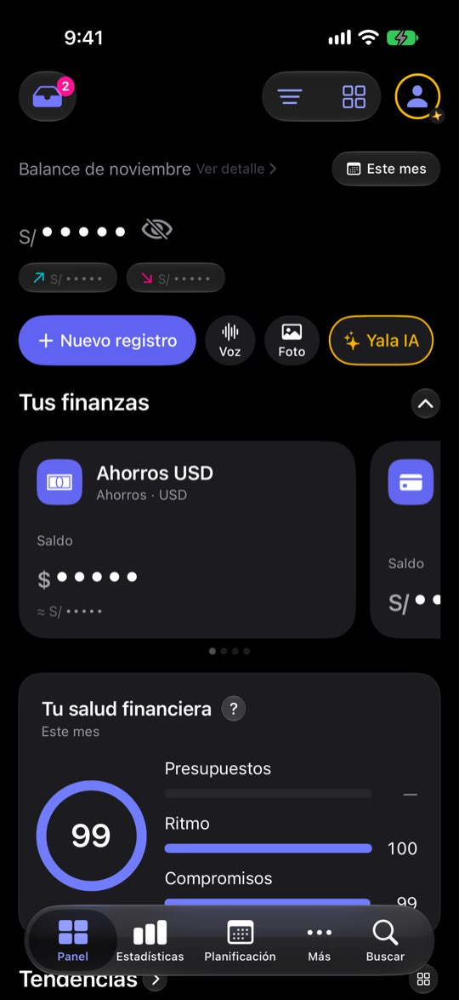

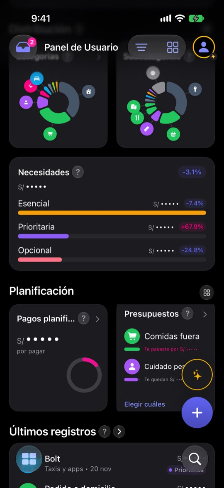
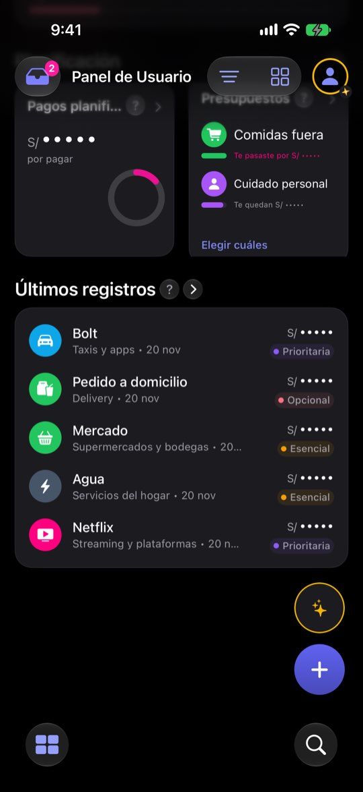

PanelSectionsConfigView
El ▦ de la barra.


Cargando
Arranque lento forzado (25 s) con el fundido del esqueleto alargado.
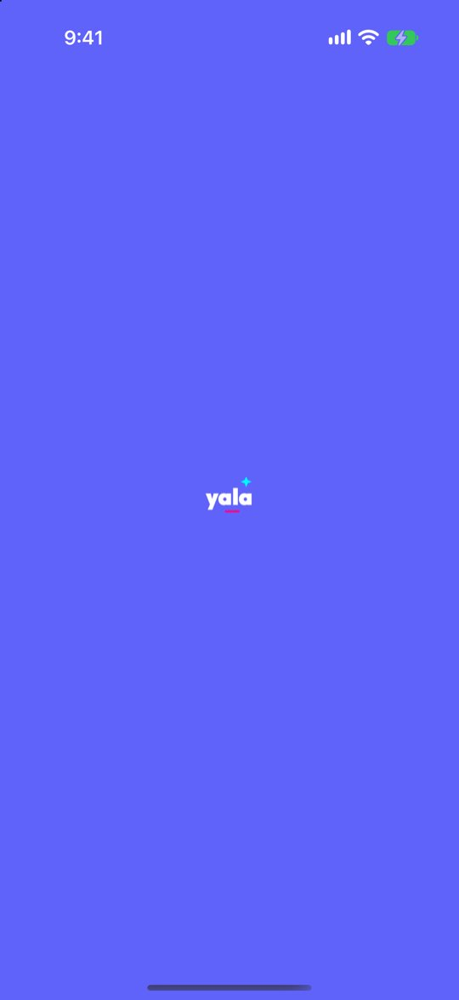

Texto grande (AX3 y máximo)
Mismo corpus de dos divisas.
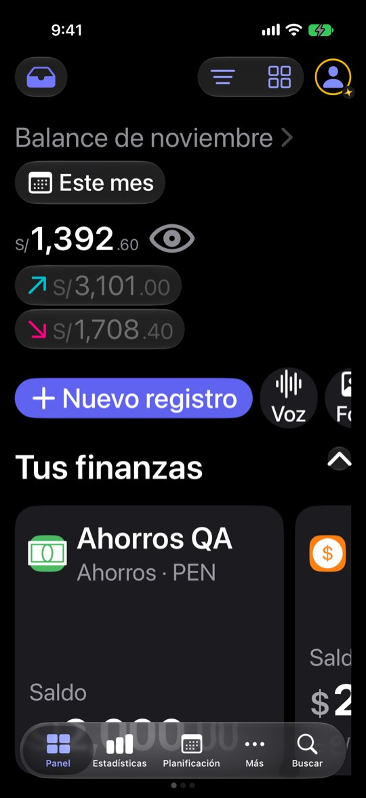
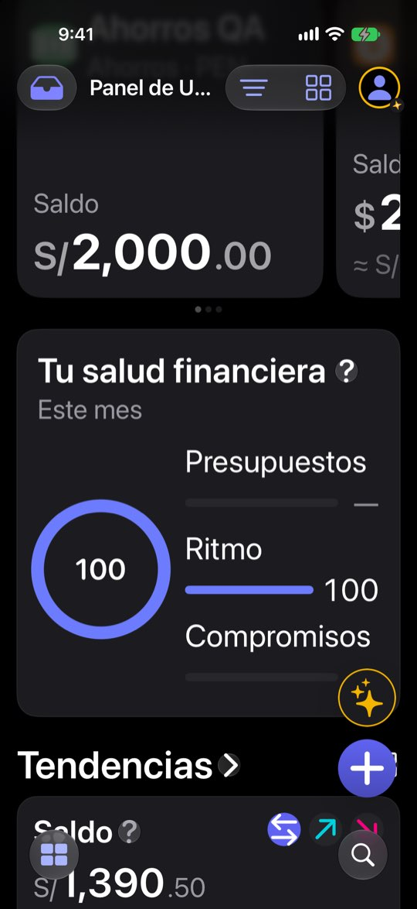


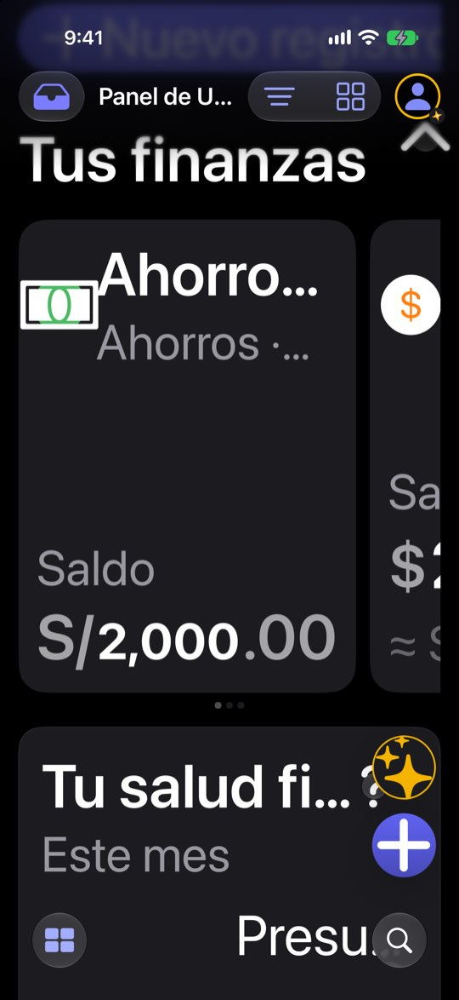
iPad Pro 13, vertical
Mismo caso que el mes típico. La vista horizontal no se capturó.
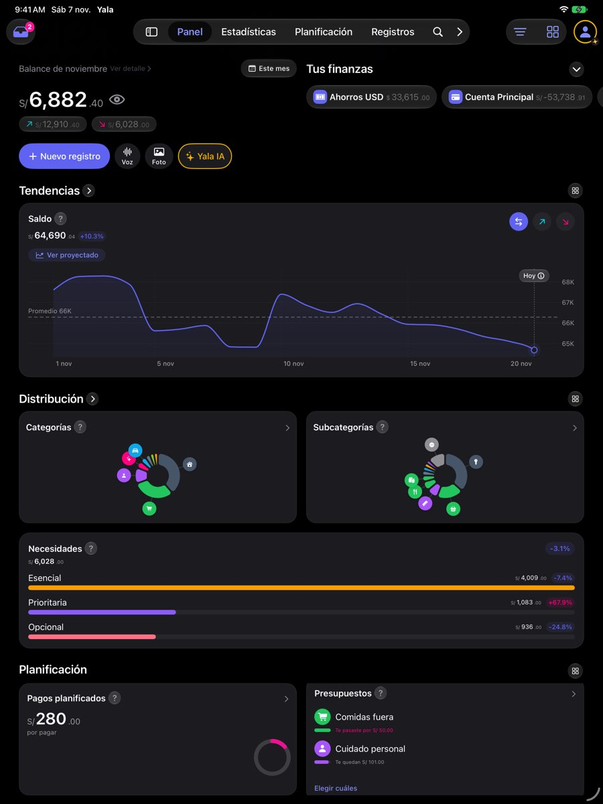

Revisión por vistas 2.3 · Panel · 7-nov-2026. Capturas del simulador (build Debug de origin/2.3, iPhone 17 Pro e iPad Pro 13, iOS 27.2, modo oscuro, datos ficticios). Los siete perfiles son lentes simuladas, no entrevistas.